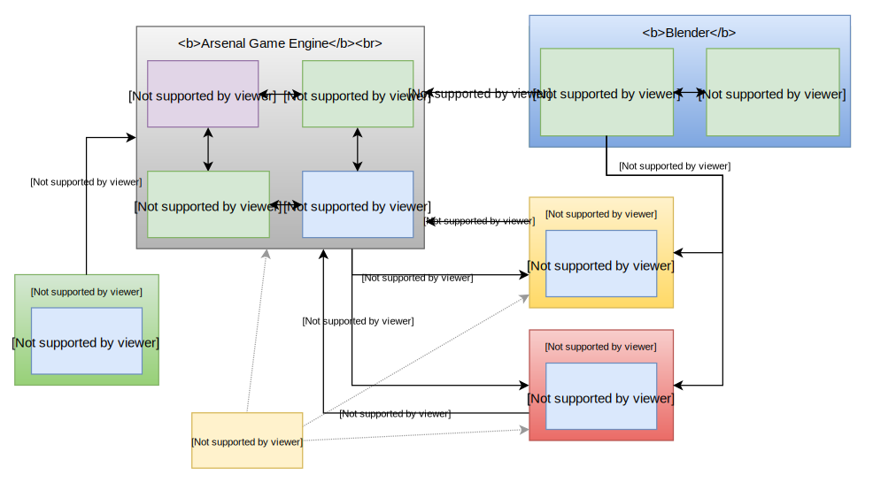

Overview
Arsenal is the idea for a Blender integrated game engine written in Rust. Currently there is no game engine, it is just an idea, but we are currently doing the planning, investigation, experimentation, and documentation that is necessary to get the project started.
To start, we are developing an architecture outline that lays out how we want to structure the components of the project.
Motivation
We at Katharos Technology have been planning to use Armory3D for our games until recent concerns about Armory3D's Haxe runtimes were brought up and we decided that Armory runs the risk of not being able to handle large games due to the Haxe core. We believe that Rust is the best language for building a game engine and as such have been doing some investigation on how we would build a Rust game engine that offers the same advantages as Armory3D.
We have decided that it would not be the best route to simply rewrite Armory in Rust. Instead we think it would be better to design a new engine, potentially built on existing Rust tools like Amethyst, and provide a rich Blender integration and Logic Node system similar to what Armory has today.
Feedback
If you have any thoughts or feedback you can open an issue or contact us on our website.
Architecture
We are currently in the process of prototyping the architecture for Arsenal. These are the drafts for the project architecture that we have made so far:
- Draft 2 - The current plan for how Arsenal will be built. This may change and the draft will be update or else a new one created.
- Draft 1 - The first design concept. See draft status to see why it was decided against.
Architecture Draft 2
Arsenal will provide what is necessary to achieve a full Blender integration with the Amethyst game engine. Extra, more opinionated components may be added on top of Amethyst if deemed necessary to provide the particular user experience that we are targeting with Arsenal, but the goal of Arsenal will be to build as much on top of Amethyst as possible, with contributions being made to Amethyst to help facilitate Arsenal's goals.
Components
Blender Plugin
The Arsenal Blender plugin will be made up of two components: the Python plugin, and the Rust Python extension. The Python plugin uses Blender's Python API to provide the UI elements specific to Arsenal inside of Blender while using the Rust Python extension to do the heavy lifting required for asset exporting.
The line between the Blender plugin and the Python extension is not fully decided at this point. The Rust extension should be used, at least, to do any processing intensive operations and will allow us to multi-thread things like asset conversion and scene export. The Python plugin may be sufficient for most other tasks if it is not decided that it is preferable to write those components in Rust due to things like Rust's static typing.
The Blender integration should orchestrate everything necessary to develop your game and build it for release. It is possible that CLIs may alternatively be used for tasks like building and distribution.
Amethyst
Amethyst and its ecosystem will provide all of the core components of the game engine.
Rendering
We will be using Amethyst's Rendy rendering library. If the render that Amethyst comes with on top of Rendy is sufficient for our taste we may not need to implement anything extra from a rendering standpoint. If necessary, though, we can write our own, more targeted, renderer on top of Rendy.
Scripting
Establishing Amethyst's scripting ability will be essential to Arsenal. There is currently an RFC for scripting in Amethyst and establishing that in the engine will be necessary for Arsenal. Arsenal will then make it easy to create and use scripts in the supported languages, from Blender ( though script editing will not be done in Blender ).
Blender Components and Systems
In order to support a Blender-compatible scene graph, we will add the components and systems necessary to handle Blender objects in the game during runtime. These components will be built into the version of Amethyst distributed with Arsenal.
Distribution
Ideally Arsenal would be distributed as a self-contained SDK that has everything needed to start development. The SDK would contain the Blender plugin and builds of Amethyst and all other supporting tools necessary to develop games with Arsenal.
From a scripting standpoint, if you want to script with Rust or other compiled languages, we may require that you install those tools separately, but support for Lua scripting should come out-of-the box so you can get started right-away.
Architecture Draft 1
The first Arsenal architecture draft is shown below:

Core Components
Kinc
We are considering building on Kinc, which is the C/C++ library that Armory is built on. Kinc handles the platform and graphics abstraction that allows Armory to target different graphics API's like Vulcan, DirectX, and Metal, and allows Armory to target game consoles as well. The maintainer of Kinc is also working on creating Rust bindings which will make it easier to integrate with.
We like Kinc because we know who the maintainer is and we could potentially port Armory's renderer by building on top of Kinc, but going with a full Rust solution is probably more pragmatic, and we are going to consider both options.
Amethyst
Amethyst is along the lines of what we want the core of the engine to be. The ECS and highly parallel design will allow the engine to scale well from small games to very large games. One of the reasons we don't want to simply rewrite Armory in Rust is because we see building the engine itself on an ECS as a large advantage in engine design.
Renderer
Something we may want to port from Armory is its renderer. Armory has a very good renderer and if we built on Kinc it would mean that we wouldn't have to change the API that it uses to communicate to the graphics hardware. It would be very nice if we could leverage the already awesome Armory renderer, but it may still may be better to go with Amethysts pure Rust renderer and instead take just the shaders from Armory or just make our own.
Arsenal Engine
Additionally we would need our own components and systems that we add on top of Amethyst to add physics simulation and Blender elements like objects, lights, speakers, etc.
All of these elements, Kinc, Amethyst, the renderer, and the Arsenal specific systems would be built together to make up the Arsenal shared library which will be utilized by the Blender plugin and the Arsenal executable.
Blender Integration
The Arsenal Blender integration will be provided by two components: the Python Blender Plugin, and the Rust Python Extension. The Python Blender Plugin, is used to provide all of the extra Blender UI elements and integrations through the Blender Python API. The Rust Python Extension is a native Python module that is loaded by the Blender plugin and used to do parallel asset conversion, to build the Arsenal game, and to run the Arsenal game from inside blender ( in a separate window, but in the same process ).
The Rust Python Extension will be dynamically linked to the Arsenal library, which will give it full access to the Arsenal engine API while simultaneously acting as a Python module that allows the Python Blender Plugin the ability to do advanced integrations with the engine such as live-sync, hot reload, etc. Tools such as the Krafix GLSL cross-compiler could also be embedded into the Rust Python Extension to make it more self-contained and hopefully eliminate most of the need to install other tools on the user's system.
Arsenal Games
The Arsenal game itself will be a Rust crate that is created alongside the .blend file by the Blender plugin, very similar to the way that Armory creates a Kha project adjacent to Armory blends. The game crate is built as a shared library that acts like an Arsenal "plugin" and is loaded by the Arsenal library as directed by the Blender plugin. The game crate also gets dynamically linked to the Arsenal library to give it full access to the game engine API.
To run the Arsenal game standalone, you use the Arsenal executable, which links to the Arsenal library and directs it to load the game crate and run the game.
Arsenal Mods
In addition to the game crate, there may be any number of "mod" crates that are nearly identical to game crates, except that they are loaded after the game crate. Mod crates are created in different blends than the game crate and can be loaded dynamically, if the game allows, to let other players add their own functionality and extensions to the game.
Experimentation Done So Far
All of the above architecture is theoretical. We have been working on proving out different elements of the architecture to make sure that it is feasible. So far we have successfully made a Rust Python extension that can be imported into a Blender plugin with a single operator that executes a Rust function.
The largest problem we are having is getting Rust crates to dynamically link to other Rust crates. It should be possible, but it may require that you use the exact same version of Rust for all libraries involved. This could cause problems with things like the fact that Amethyst only supports Rust stable and the PyO3 library we are using for the Python extension requires Rust nightly. We need to do some research to see if there is a way to provide a stable ABI over which to link Rust crates to each-other conveniently.
Draft Status
This design draft has been decided against due to the fact that there is no way in Rust to do dynamic linking between crates built by different versions of Rust. A Rust forum topic was brought up to discuss this. This design relied heavily on being able to dynamically Rust crates and is therefore unfeasible.